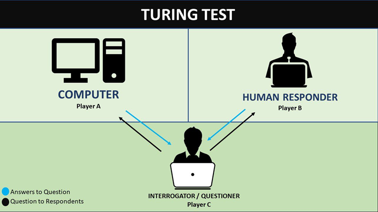

Alan Turing published a paper suggesting a test: if a person having a conversation cannot tell whether they are talking to a human or a machine, does it matter which it is? This became known as the Turing test. Note that no computer existed at the time that could get anywhere near it.

A summer workshop at Dartmouth College brought together the researchers working on the idea, and John McCarthy came up with the term "artificial intelligence" for the proposal. This is usually treated as the moment the field officially started.
Joseph Weizenbaum built a program that imitated a therapist by turning whatever you typed back into a question. It was simple and followed fixed rules, but people talked to it as though it understood them, which unsettled Weizenbaum enough that he spent years warning about it.
Researchers had promised a great deal and delivered much less, so governments cut the funding. The field went quiet. This happened again in the late 1980s, and the pattern of big promises followed by disappointment is worth keeping in mind when reading AI news today.
Businesses started using programs that followed long lists of rules written by specialists, for jobs like diagnosing equipment faults. They worked, but only inside the exact area they were built for, and keeping the rules up to date turned out to be an enormous amount of work.
IBM's chess computer beat the world champion Garry Kasparov in a match. It did this mostly by checking an enormous number of possible moves very quickly rather than by anything resembling thinking, but it was the first time a machine beat the best human at something people treated as a test of intelligence.
A system called AlexNet won an image recognition competition by such a large margin that the field changed direction almost overnight. It used a neural network trained on graphics cards, and this is the point where the modern approach took over.
Go has far more possible positions than chess, so the Deep Blue approach of checking every move does not work. DeepMind's AlphaGo beat the top player Lee Sedol by learning patterns instead. One of its moves was so unusual that commentators assumed it was a mistake.
A research paper introduced a design called the transformer, which handles language much better than what came before. Every well known chatbot today is built on this idea, which is what the GPT in ChatGPT stands for.
The technology had existed for years, but ChatGPT put it behind a text box anyone could use. It reached a hundred million users faster than any app before it, and it is the reason most people started paying attention to AI at all.
The pattern worth noticing
Reading the dates together, AI has gone through several rounds of loud excitement followed by a quiet collapse. Some of what is promised now will arrive and some will not, and the history is a reasonable guide to being careful about which is which.